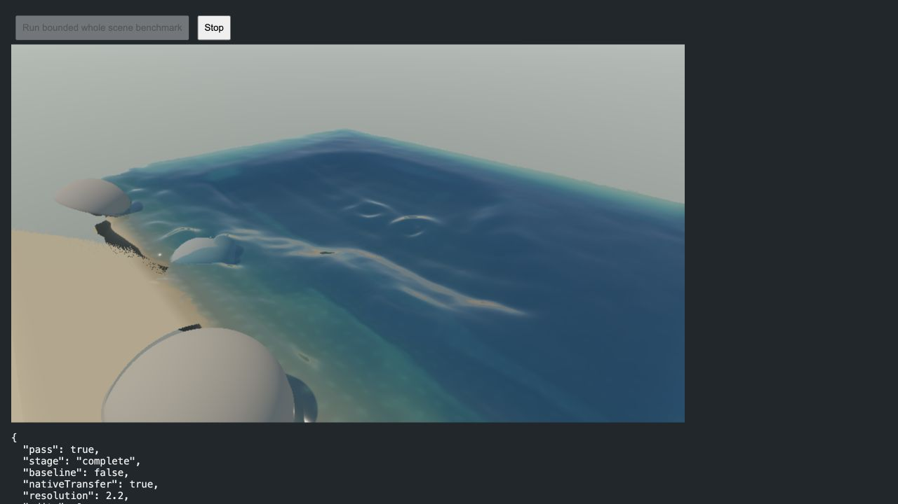
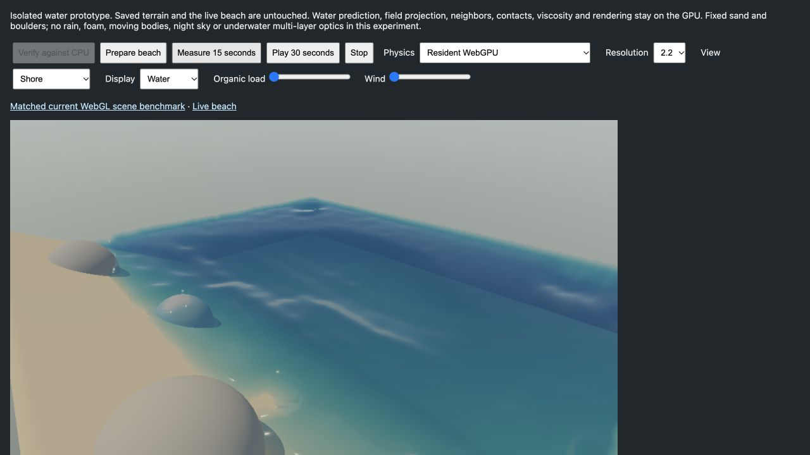
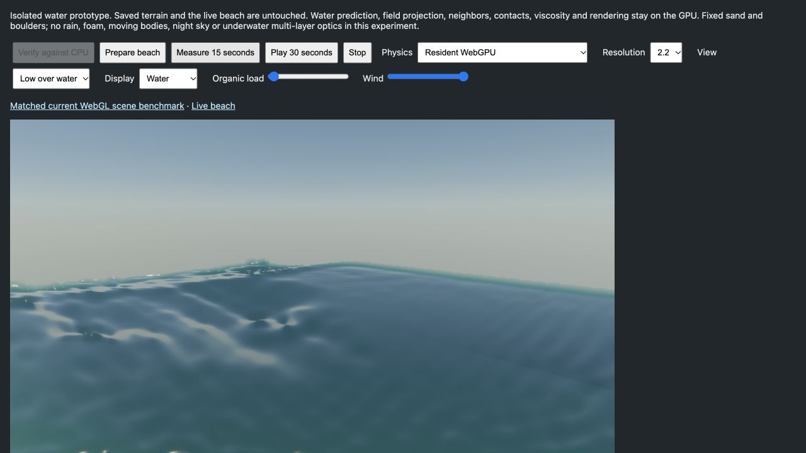

2026-11-08 · this Mac, AMD GCN-4 adapter · own Chromium preview · 960 × 540 · 13,293 water markers.
The isolated prototype keeps water simulation and rendering on one WebGPU device and reaches approximately realtime simulation. It preserves the beach scale, boulders, Gaussian water reconstruction, SH lighting, atmospheric colors and water absorption/scattering. It does not yet preserve the full live scene's features or optical fidelity, so it has not replaced the live beach.
Open prototype · Current-engine comparison · Live beach
| Path | Actual FPS | Simulation / wall time | Mean / p95 frame work |
|---|---|---|---|
| Current engine: CPU + WebGL | 4.01 | 0.532× | 247.8 / 267.4 ms |
| Current CPU + prototype WebGPU renderer (30 Hz control) | 3.00 | 0.292× | 326.8 / 375.5 ms |
| Resident WebGPU water + rendering | 29.31 | 0.997× | 29.6 / 38.8 ms |
Resident versus current engine: 7.31× FPS and 1.87× simulation throughput in this calm-water workload. Rendering is capped at 60 FPS and simulation at 1.00×. “Frame work” includes waiting for GPU completion; actual FPS also includes presentation scheduling. These are completed frames and simulated seconds, not isolated shader timings.
The baseline uses the current live CPU physics and WebGL renderer, including the latest CPU overlap and native transfer work. Both use the same beach seed, particle count, boulders, view, image size, sun, fixed exposure and pressure-grid density (3,553 cells). Rain, sea foam, fine water particles, tides and lunar motion are disabled. The current engine still performs sand/air/environment work and draws sand grains; the prototype uses fixed terrain.
This is not a pure WebGL-versus-WebGPU speedup. The new water-only pressure projection uses 64 bounded Jacobi iterations at 30 Hz. The current engine retains its two-phase multigrid solver and original 15 Hz step. The CPU + WebGPU-rendering control uses current CPU physics at the prototype's 30 Hz step and transfers markers to the same new renderer. Its low throughput shows that changing rendering alone does not remove the CPU physics bottleneck; it does not isolate residency from solver simplification.
Baseline: 90 measured frames after 0.8 simulated seconds of warmup. Resident/control: 15 wall seconds after 0.8 simulated seconds of warmup, maximum three earned steps per completed frame. Diagnostic readback occurs after timing. Earlier calm resident runs measured 28.6–30.0 FPS and approximately 0.997× realtime; the table uses the final renderer with conservative frustum rejection.


Water uses actual perspective-projected 3D Gaussian covariance, front-depth and additive Gaussian optical thickness, separable depth-aware filtering, SH diffuse environment response, Fresnel reflection and attenuated water scattering. It is not a learned 3DGS scene. Fixed sand and boulders are cached raster meshes sampled from the existing terrain; they are not newly converted to Gaussian primitives.
The new surface is softer. A single front-depth layer cannot reproduce the existing glass, underwater layers, arbitrary scene reflection or deliberate SDF edge mirage. The rectangular pool's far edge also produces a visible diagonal transmission transition. These differences remain promotion blockers. A low-angle bug from off-screen Gaussians projecting to huge ellipses was fixed with conservative view-plane rejection; view/material changes now serialize their submissions.
At wind 40, a low view and organic load 0.05, the final bounded run measured 23.6 FPS and 0.995× simulation speed. All markers remained finite and inside the domain, with zero measured solid penetration. A preceding 30-second strong-wind check also completed; this is not a long-duration stability guarantee.

Prediction, occupancy, spatial binning, MAC deposition, pressure, projection, PIC/FLIP transfer, neighbor search, solid contacts, viscosity, capillarity and solute mixing execute on the GPU. Rendering reads the resulting marker buffer directly. After initialization, the resident frame loop uploads only camera/control uniforms: no particle or grid upload and no particle readback. A 16-byte status fence checks every step in a batch; the full diagnostic checkpoint is outside timing. CPU scene construction, scheduling and controls remain on the CPU.
Limits: 16,384 markers, 4,096 cells, 128 grid-bin slots, 64 hash-bucket slots, 128 neighbors, 64 pressure iterations, maximum 960 × 540, one outstanding submission, at most three steps, 2.5-second completion timeout and a 500 ms completed-frame stop. Capacity overflow is tested deliberately and stops the prototype instead of truncating silently or repeatedly retrying. Compute storage at the measured size is 15.9 MiB. A timeout cannot guarantee recovery from every driver failure, so bounded submission sizes remain essential.
The CPU reference and current-CPU control are explicit. If WebGPU is unavailable or a guard trips, the prototype stops and the existing CPU/WebGL beach remains available via its link. It does not silently resume with partial GPU state.
The relevant API mechanism is shared storage buffers across compute and render passes on one device/queue; see the WebGPU specification. Performance evidence here comes from the local measurements, not the specification.
Current engine · Current CPU + new renderer · Final resident run · Final wind run · CPU/GPU comparison and overflow guard
Open the prototype, click “Verify against CPU,” select resolution 2.2, click “Prepare beach,” then “Measure 15 seconds.” Use the linked current benchmark for the baseline. The CPU control uses the Physics dropdown followed by Prepare. No graphics work starts merely from opening either page. All new implementation is isolated under src/resident-water; historical test implementations and saved terrain are unchanged.